Data Structures and Algorithms
with Object-Oriented Design Patterns in C++
Data Structures and Algorithms
with Object-Oriented Design Patterns in C++When dealing with directed graphs, we define two kinds of connectedness, strong and weak. Strong connectedness of a directed graph is defined as follows:
Definition (Strong Connectedness of a Directed Graph) A directed graphis strongly connected if there is a path in G between every pair of vertices in
.
For example, Figure  shows the directed graph
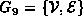 given by
shows the directed graph
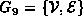 given by
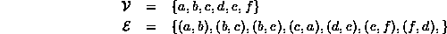
Notice that the graph  is not connected!
E.g., there is no path from any of the vertices in
is not connected!
E.g., there is no path from any of the vertices in  to any of the vertices in
to any of the vertices in  .
Nevertheless, the graph ``looks'' connected
in the sense that it is not made of up of separate parts
in the way that the graph
.
Nevertheless, the graph ``looks'' connected
in the sense that it is not made of up of separate parts
in the way that the graph  in Figure is.
in Figure is.
This idea of ``looking'' connected
is what weak connectedness represents.
To define weak connectedness we need to introduce first
the notion of the undirected graph that underlies a directed graph:
Consider a directed graph  .
The underlying undirected graph is the graph
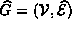 where
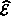 represents the set of undirected edges that is obtained
by removing the arrowheads from the directed edges in G:
.
The underlying undirected graph is the graph
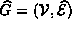 where
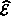 represents the set of undirected edges that is obtained
by removing the arrowheads from the directed edges in G:
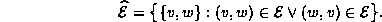

Figure: An Weakly Connected Directed Graph and the Underlying Undirected Graph
Weak connectedness of a directed graph is defined with respect to its underlying, undirected graph:
Definition (Weak Connectedness of a Directed Graph) A directed graph
For example,
since the undirected graph  in Figure is connected,
the directed graph
in Figure is connected,
the directed graph  is weakly connected.
Consider what happens when we remove the edge (b,e)
from the directed graph
is weakly connected.
Consider what happens when we remove the edge (b,e)
from the directed graph  .
The underlying undirected graph that we get is
.
The underlying undirected graph that we get is  in Figure .
Therefore,
when we remove edge (b,e) from
in Figure .
Therefore,
when we remove edge (b,e) from  ,
the graph that remains is neither strongly connected nor weakly connected.
,
the graph that remains is neither strongly connected nor weakly connected.
A traversal of a directed graph (either depth-first or breadth-first)
starting from a given vertex
will only visit all the vertices of an undirected graph
if there is a path from the start vertex to every other vertex.
Therefore,
a simple way to test whether a directed graph is strongly connected
uses  traversals--one starting from each vertex in
traversals--one starting from each vertex in  .
Each time the number of vertices visited is counted.
The graph is strongly connected if all the vertices are visited
in each traversal.
.
Each time the number of vertices visited is counted.
The graph is strongly connected if all the vertices are visited
in each traversal.
Program shows how this can be implemented.
It shows the IsConnected member function of the Digraph
class which returns the Boolean value true if the graph
is strongly connected.
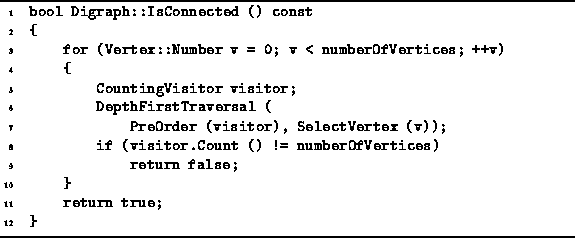
Program: Digraph Class IsConnected Member Function Definition
The routine consists of a loop over all the vertices of the graph.
Each iteration does a DepthFirstTraversal using
the CountingVisitor given in Program .
The running time for one iteration
is essentially that of the DepthOrderTraversal
since  for the counting visitor.
Therefore, the worst-case running time for the IsConnected routine
is
for the counting visitor.
Therefore, the worst-case running time for the IsConnected routine
is  when adjacency matrices are used
and 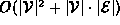
when adjacency lists are used to represent the graph.
when adjacency matrices are used
and 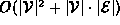
when adjacency lists are used to represent the graph.
 Copyright © 1997 by Bruno R. Preiss, P.Eng. All rights reserved.
Copyright © 1997 by Bruno R. Preiss, P.Eng. All rights reserved.